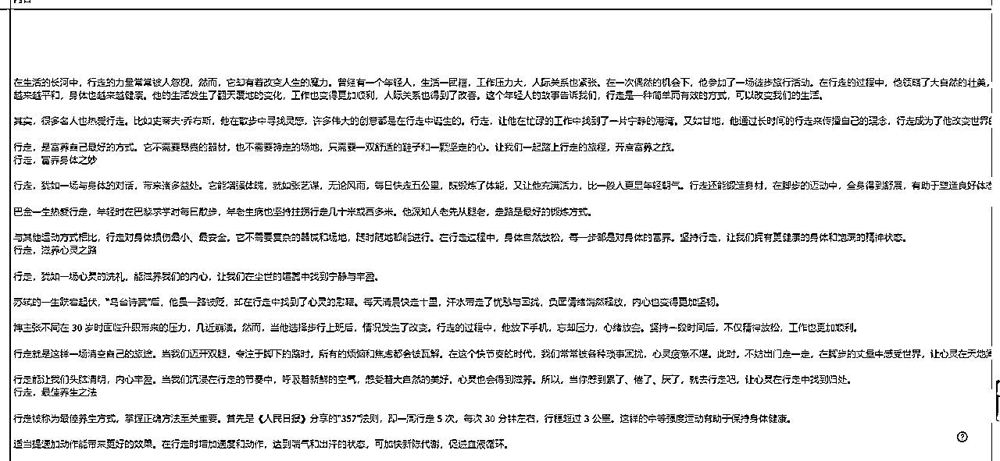
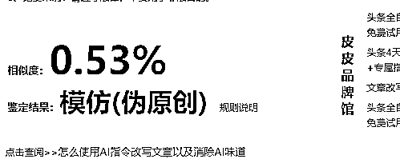
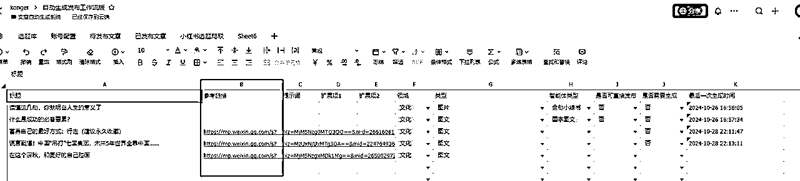
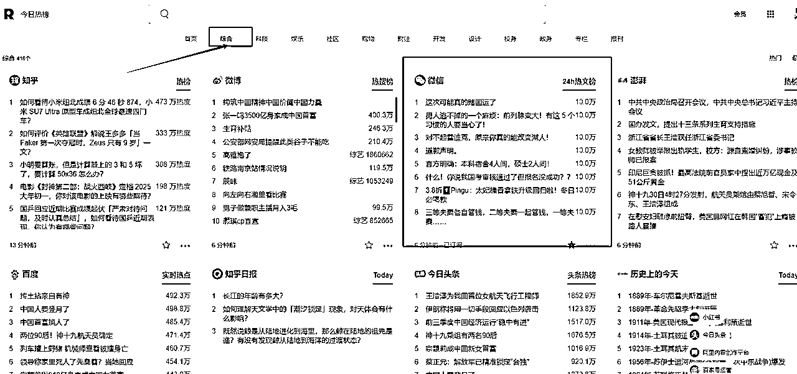
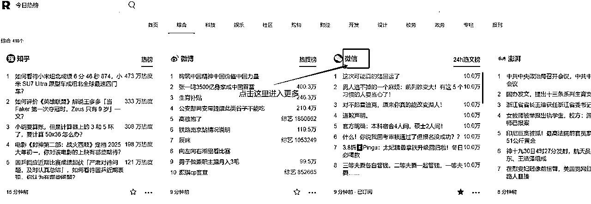
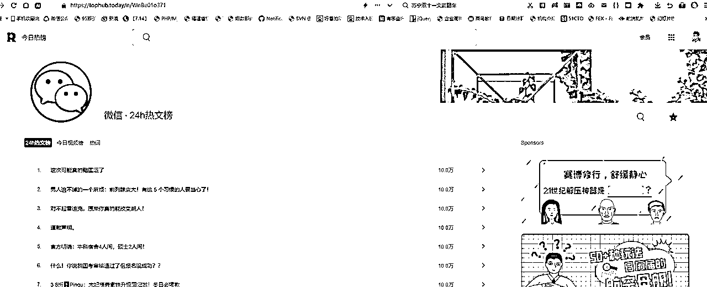
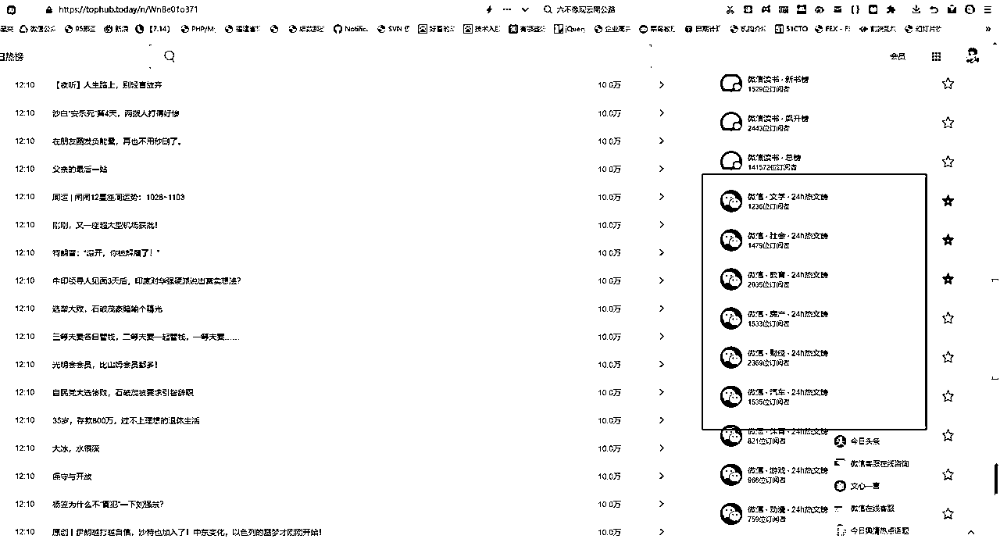
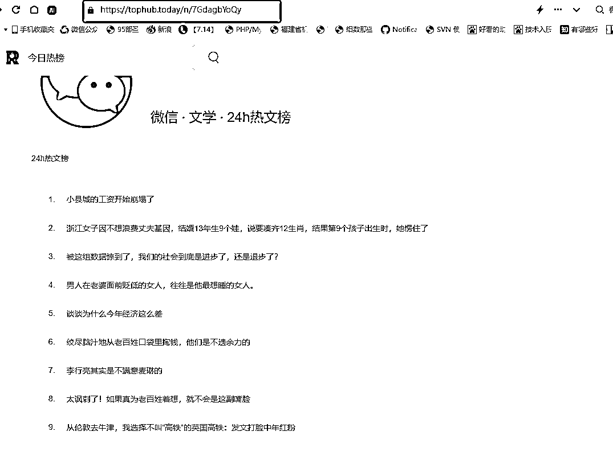
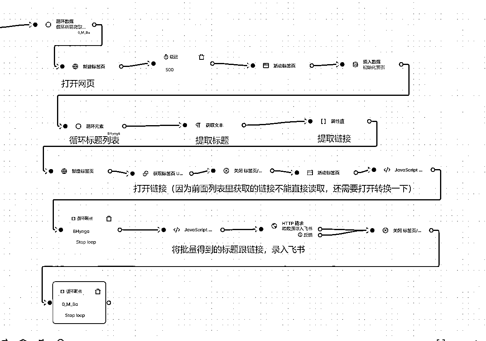
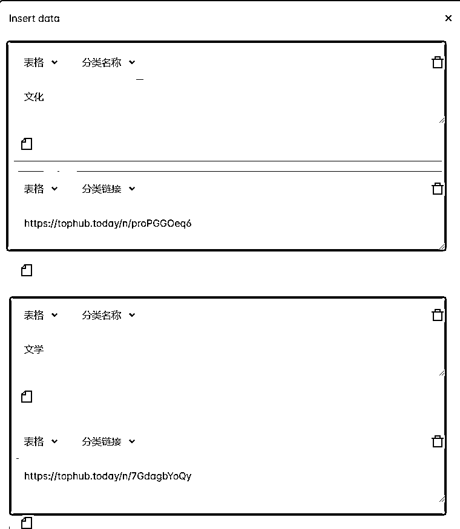

来源：https://b121w2zgwyx.feishu.cn/docx/XtXedp3Kto7MUpx5xl7cX6JYnhh
上一篇文章： 我将公众号文章、小绿书两种类似的自动化给合并到了一起。但是由于只支持 国学文章，和金句小绿书的生成。导致不一定满足大家的需求。
因此！这两天我多掉了几根头发，新增了个文章仿写工作流。这样，一个批量内容生产机器就诞生了。以下是工作流仿写的结果：

经过查重网站检查，相似度只有0.53%，还是可以的，而且内容读起来，AI味没有非常重

接下来，分享一下如何使用这个仿写功能。
首先、前提前提，先按照
部署一下脚本。

如上图，飞书表格中，有一列为参考链接。 大家填写标题之后，如果有需要仿写的，提供一下仿写文章的链接（目前支持公众号链接，其他的没试过）。只有填写了参考链接，工作流就会认为是仿写，会自动调用链接进行仿写和生成。
同样的， 领域、和类型 是必填的，否则后续会对应不到账号。
是的！ 有的时候，某些单独的文章，需要自己找链接。可是大多数情况下，大家如果自己去找就很累了，因此我也写了一个RPA脚本，可以自动爬取热点文章标题和链接，直接录入选题中，这样我们连选题都不用自己填了。只要脚本一直跑，就有文章一直生成了。
我把这个脚本的思路分享给大家一下。
网址如下 https://tophub.today/c/news
进入之后，我们点击“综合”可以看到，有一个微信的24小时热榜

点击微信两字，进入更多的热榜内容页


接着，我们往下拉，看右边，可以找到细分领域的热榜，这就是我需要的了。


记下这个网址，我们接下来就用脚本爬取这个网页内容。

总体还是比较简单的了。
可以根据这大致思路，爬取自己想要的内容链接，让AI仿写。
社群成员拿到脚本后，同样的进入“插入数据”节点配置一下你需要的爬取的领域类型。

注意了，一定要成对配置，一条分类名称，一条是分类链接，分类名称，会跟飞书表格里的领域对应
还有，如果需要爬取更多的，就按照这个格式添加更多的就行了，跟之前不同的是，这个地方用的是表格，不是变量
好了，快去试试吧！